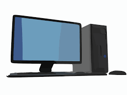
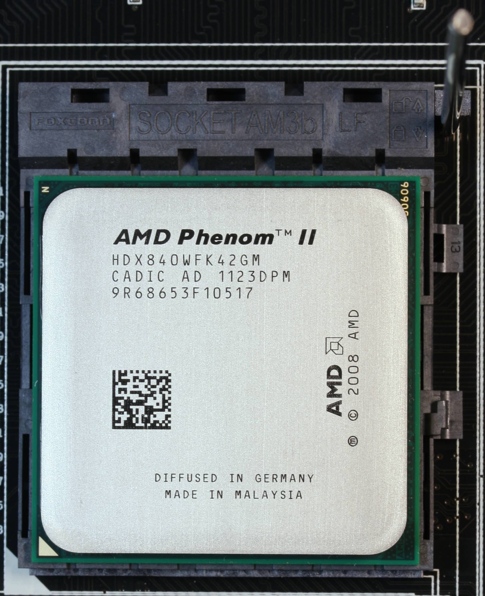
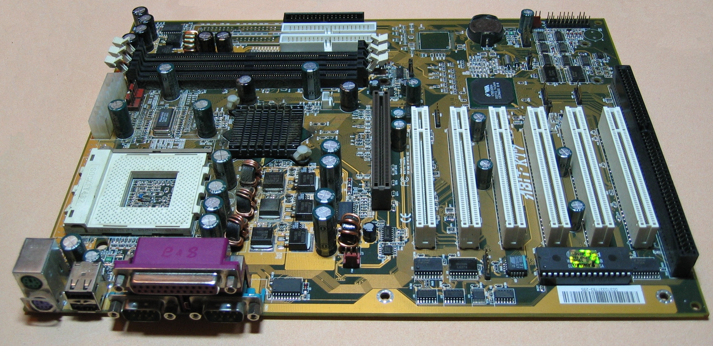
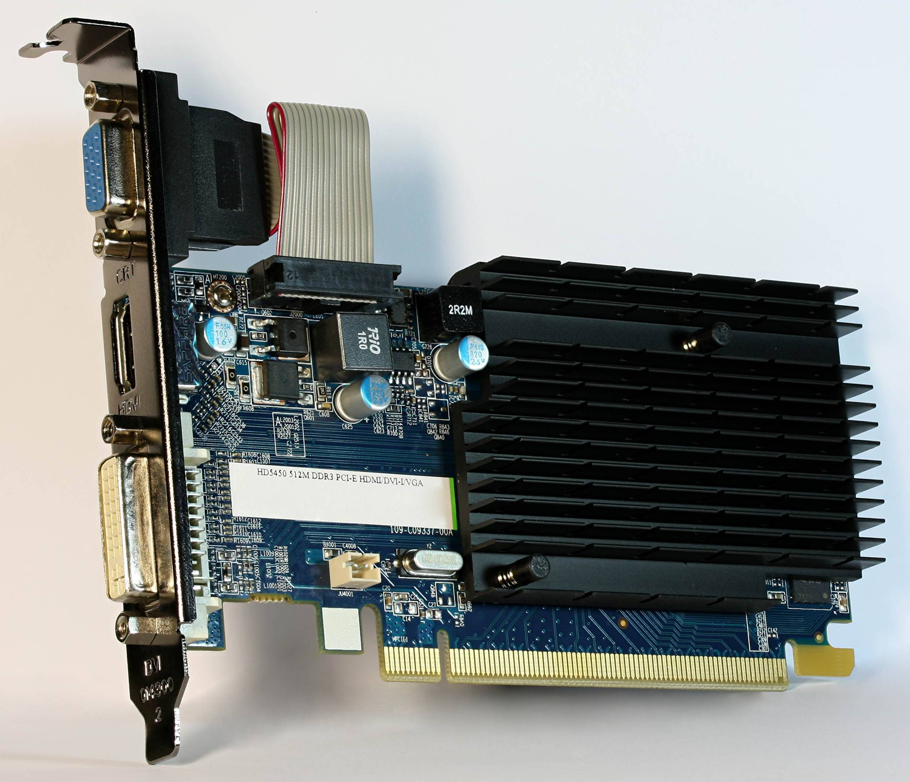
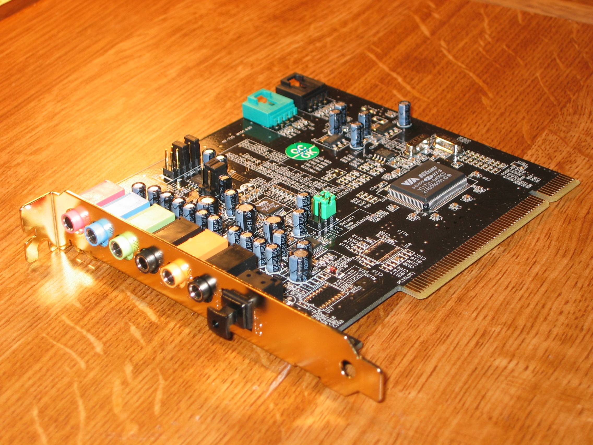
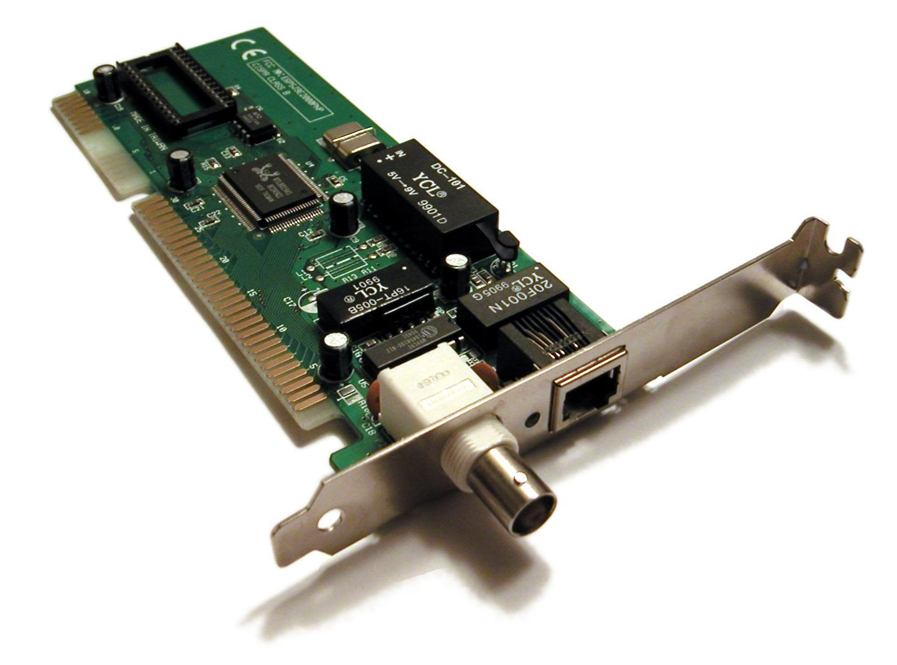
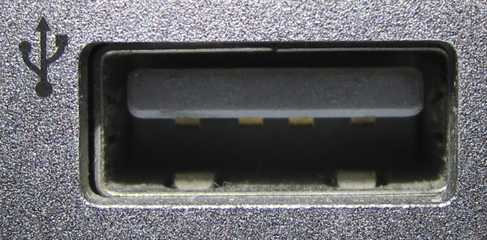
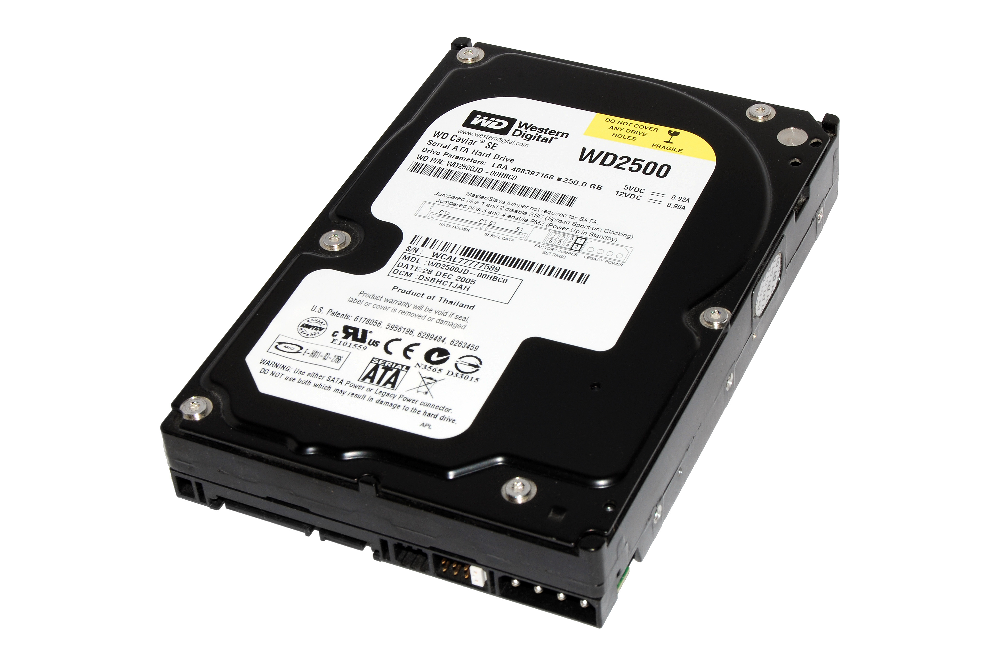
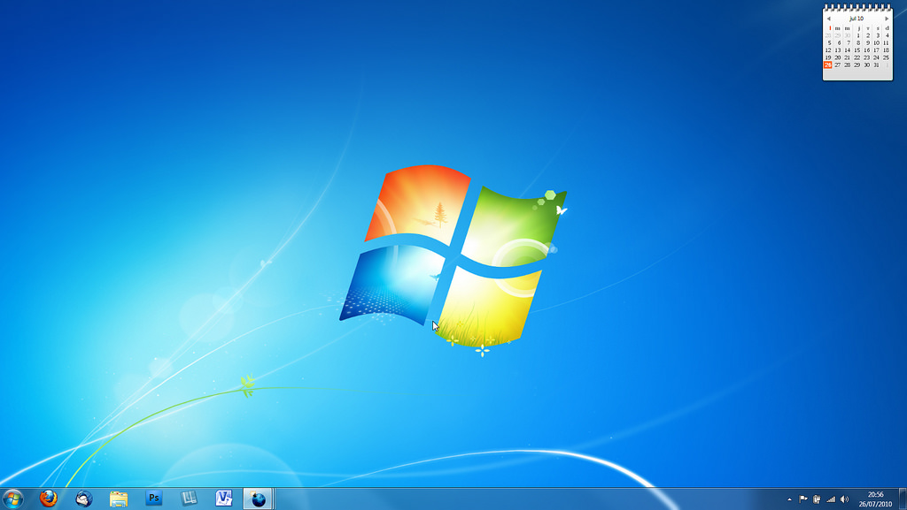
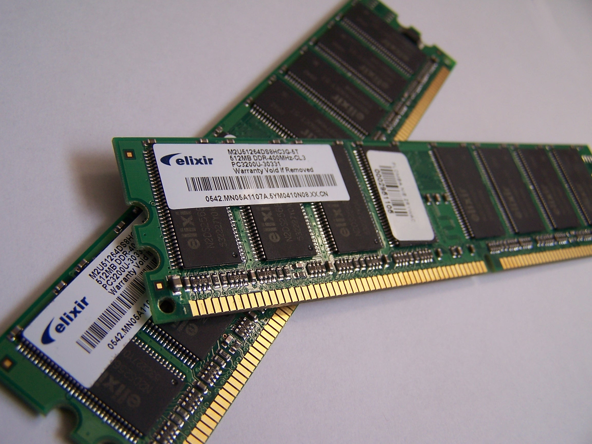

作業系統 Windows 7 的故事
序章
從前從前有家公司，名叫做「電腦」

「電腦」股份有限公司有個老闆，名叫做CPU
CPU火氣大，容易過熱發燒，所以住在風扇底下

「電腦」股份有限公司的總公司所在地名叫「主機板」
「電腦」股份有限公司有很多員工，通稱「電容」
「主機板」有很多座位空缺(擴充界面卡槽)可以放置「顯示卡(與螢幕溝通的職位)」、「音效卡(與喇叭溝通的職位)」、「網路卡(網管職位)」、其他等等

顯示卡(與螢幕溝通的職位)

音效卡(與喇叭溝通的職位)

網路卡(網管職位)

公司有個重要人物，跟老闆名字很像，叫作「GPU」，他是公司的畫師，很重要的繪畫人員

公司還有個很重要的溝通人員，叫做「USB」，他負責和很多不同的工作人員溝通協調，像是鍵盤或滑鼠

至於像是鍵盤、滑鼠、掃描器、電繪版，他們是向公司回報客戶(終端使用者)要求的輸入組
印表機、螢幕，喇叭，則是向客戶(終端使用者)提供資訊的輸出組
ヽ(∀ﾟ )人(ﾟ∀ﾟ)人( ﾟ∀)人(∀ﾟ )人(ﾟ∀ﾟ)人( ﾟ∀)ﾉ
「電腦」有個儲藏室，叫做「硬碟」(HD)

CPU有個秘書，叫做「Windows 7」小名為「作業系統」，他常住在硬碟裡

CPU有個辦公空間，叫做「RAM」

Windows 7 有個管家，叫做 BIOS ，他是個地縛靈，常住在 ROM 裡面，ROM是個即使天塌下來(電源被中途切斷)也不會消失的地方

每天開始上班(開機)，BIOS就會先醒來，四處尋找住在倉庫(硬碟)裡的作業系統
作業系統的工作就是每天上班(開機)幫CPU要做的工作從硬碟搬到RAM裡暫存，下班時(關機)將工作從RAM搬到硬碟
(´・ω・)つ旦
作業系統的第二個工作，就是幫CPU排定要做事情的時間表
…_〆(°▽°*)
作業系統的第三個工作，就是與「電腦」的客戶，「使用者」，與其溝通
₍₍ ◝(‘ω’◝) ⁾⁾ ₍₍ (◟’ω’)◟ ⁾⁾
作業系統的第四個工作，就是每天跟底下的員工，輸出部門的「印表機、螢幕，喇叭」和輸入部門的「滑鼠、鍵盤、電繪版」溝通
─=≡Σ((( つ•̀ω•́)つ
作業系統 Windows 7 小姐就這樣每天晚九朝五的工作，本來想一直做到退休。
卻沒想到半路殺出程咬金，Windows 10 小姐
Windows 10小姐也是來競爭作業系統的人，而且還是微軟大學擔保的學生
不過她時常因為更新而搞的公司人仰馬翻，所以客戶們(終端使用者)不是很喜歡她
Windows 7小姐暫時不會中年失業了，真是可喜可賀可喜可賀
ヽ(✿ﾟ▽ﾟ)ノ
完
(・∀・)